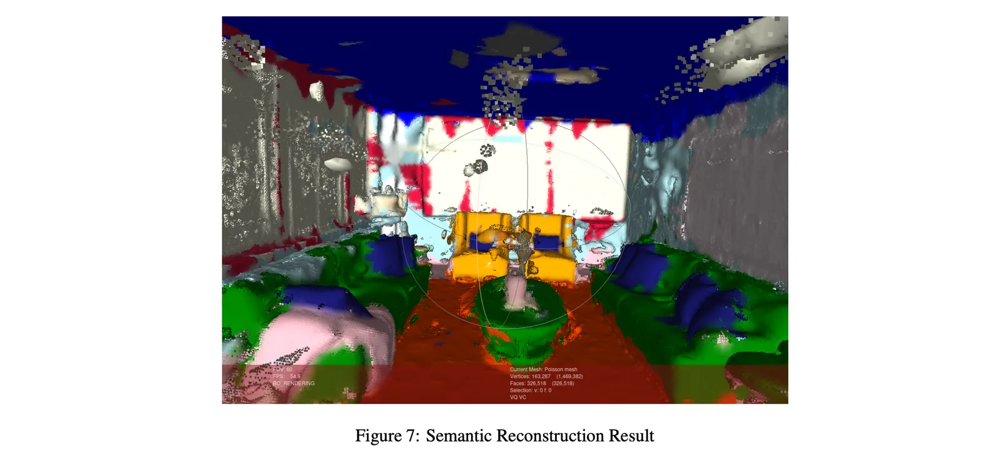

Computer vision
Fall 2023
3D Semantic Reconstruction
Built a pipeline that combined 3D reconstruction with semantic labels from the original images.
IoU 0.75
COLMAP + U-Net
Read the approach
I generated sparse and dense point clouds with COLMAP, created segmentation masks from the source images with U-Net, and mapped those 2D labels onto the reconstructed points. A voting/classification step combined repeated observations so the final 3D scene kept useful semantic labels.